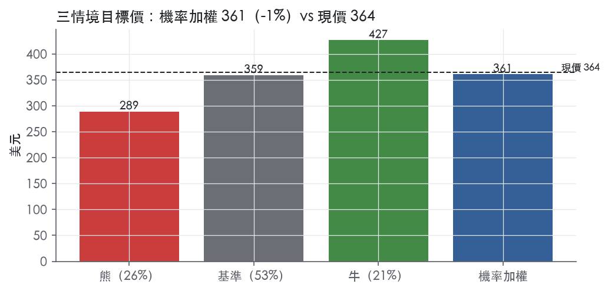
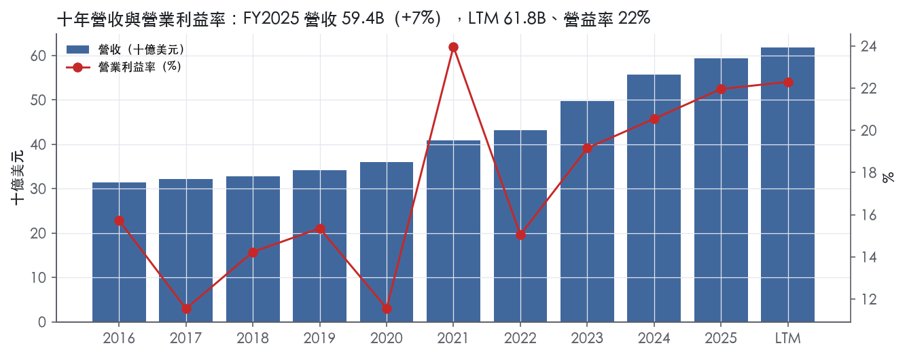
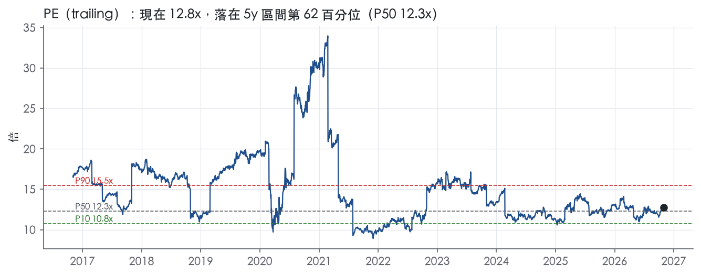
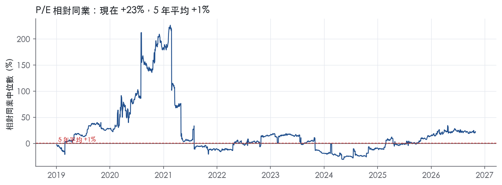
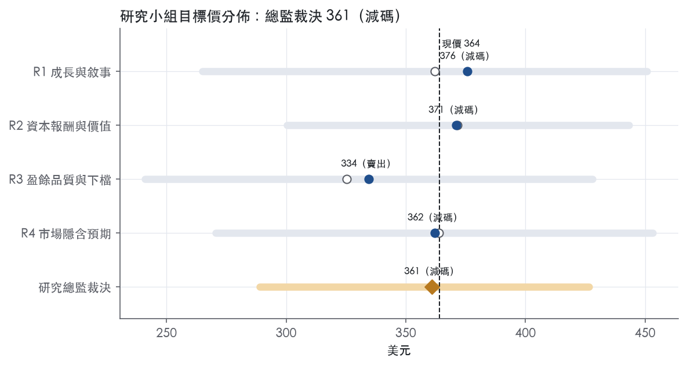
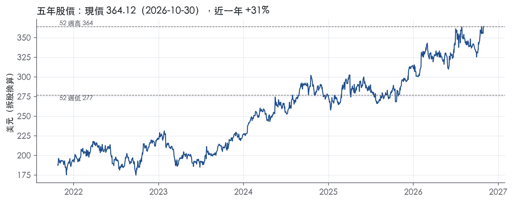

評等總表 › 金融 › CB
盈餘被高估、倍數回中位，相對看空｜評等 減碼｜目標價 361
| 報告日 | 評等 | 目標價 | 當時股價 | 超額報酬 |
|---|---|---|---|---|
| 2026-10-30 | 減碼 | 361 | 364 | -9.8% |
| 評等 | 減碼 |
| 12 個月目標價 | 361 美元 |
| 現價 | 364.12 美元（2026-10-30） |
| 預期報酬 | 股價 -0.9%＋股息 1.1%＝總報酬 +0.2%；同業籃門檻 10.0%，超額 -9.8% |
| 估值方法 | P/E 12.3x，套在未來四季的EPS |
| 三情境 | 熊 289／基準 359／牛 427 |
| 研究流程 | 四位研究員兩輪辯論＋研究總監裁決 |
| 資料來源 | SEC EDGAR XBRL、Tiingo、FRED（全免費） |
盈餘被高估、倍數回中位，相對看空（研究總監裁決，四位研究員兩輪辯論後）
評等 減碼｜12 個月目標價 361 美元（總監三情境機率加權 355 與研究員中位數 367 各半）｜現價 364.12（2026-10-30）
預期報酬：股價 -0.9%＋股息 1.1%＝總報酬 +0.2%。同業籃門檻 10.0%，超額 -9.8%。
估值方法：P/E 12.3x，套在未來四季的EPS。三情境：熊 289（26%）／基準 359（53%）／牛 427（21%）。
什麼會讓研究總監改變看法：2027Q1 北美商業報告值 NPW >+5%、綜合比率 ≤85% 且有利 PPD 仍 ≥400M，我轉中性並把錨改為 3 年 P90；FY2026 10-K 的 GAAP 有效稅率 ≤17%，則稅率裁決錯誤，EPS 上修。
| 過去四季（實際，FY2026Q3） | 未來四季 | 第 5–8 季 | 第 9–12 季 | |
|---|---|---|---|---|
| 營收（B） | 61.8B | 64.3B | 67.2B | 70.6B |
| 營收成長 | 5.7% | 4.0% | 4.5% | 5.0% |
| 營業利益率 | 22.3% | 21.5% | 21.0% | 21.0% |
| EPS（美元） | 28.47 | 29.19 | 30.68 | 33.16 |
| EPS 成長 | 19.0% | 2.5% | 5.1% | 8.1% |
| 每股股息（美元） | 3.16 | 3.16 | 3.16 | 3.16 |
| P/E（現價） | 12.8x | 12.5x | 11.9x | 11.0x |
| 股息殖利率（現價） | 1.1% | 0.9% | 0.9% | 0.9% |
過去四季為申報數字；預測為研究總監的假設、程式計算。倍數與殖利率都用現價計算，用來看現價對應各期獲利的高低。
| 情境 | 機率（歷史） | 故事 | 未來四季營收成長 | 第 5–8 季營益率 | 倍數 | 目標價 | 股價漲跌 |
|---|---|---|---|---|---|---|---|
| 熊 | 26%（25%） | 風險表第 1、2、3 條：巨災停在 705M 季水準、有利 PPD 由 511M 轉不利、北美商業 NPW 負到 2027 全年，綜合比率 87→88–89%，疊加本行下行路徑 Baa 2.30 與 2 年債 3.90 使 NII 停滯，倍數到 5 年 P10 | 2.5% | 19.0% | 10.8x | 289 | -20.6% |
| 基準 | 53%（53%） | 已賺保費隨簽單降速到 4%，PPD 正常化與巨災回常態使營益率落到 21%，19% 稅率取代 15.8%，回購撐 EPS，倍數從 62 分位回自家中位數 | 4.0% | 21.0% | 12.3x | 359 | -1.4% |
| 牛 | 21%（22%） | 2027 上半年北美商業報告值 NPW >+5% 且綜合比率 ≤85%，國際壽險續增雙位數，利差走本行上行 1.45，倍數到同體制 3 年 P90；稅率維持 19% | 6.0% | 22.5% | 13.7x | 427 | 17.1% |
目標價由程式依研究總監的驅動與倍數計算；機率由研究總監給定。括號內是歷史頻率：把這檔股票過去十年 12 個月報酬的波動形狀，置中在基準情境，結果落在各情境附近的比例。

四位研究員用不同方法各自估值，回應研究總監的質疑後交出第二輪，最後由總監逐點裁決。各研究員的主張見第七章，裁決理由見第八章，完整論證見《研究底稿》。
| 立場（一輪→二輪） | 加權目標價（一輪→二輪） | 評等（一輪→二輪） | 第二輪倍數 | 熊～牛目標價 | |
|---|---|---|---|---|---|
| R1 成長與敘事 | 看空→看空 | 362→376 | 減碼→減碼 | 12.3x | 265～451 |
| R2 資本報酬與價值 | 看空→看空 | 372→371 | 減碼→減碼 | 12.3x | 300～443 |
| R3 盈餘品質與下檔 | 看空→看空 | 325→334 | 賣出→賣出 | 11.0x | 241～428 |
| R4 市場隱含預期 | 看空→看空 | 364→362 | 減碼→減碼 | 11.0x | 270～453 |
| 研究總監裁決 | 看空 | 361 | 減碼 | 12.3x | 289～427 |
目標價由程式依各自的驅動與倍數計算；評等＝機率加權總報酬 − 同業籃門檻。
Chubb是一家在瑞士蘇黎世註冊、以百慕達起家的全球財產與意外險（P&C）、意外與健康險（A&H）、再保險及人壽保險集團，透過六大業務分部服務全球多元客群¹。截至2025年12月31日，公司總資產272億美元、股東權益（不含非控制權益）74億美元¹——注意此處10-K原文用語為「$272 billion」及「$74 billion」，換算單位後應為272B美元及74B美元。公司業務遍及54個國家與地區，提供商業與個人P&C保險、A&H、再保險與人壽保險，客群從跨國企業、中小型企業、高資產淨值個人到管理巨災風險的保險公司都有¹。Chubb的核心哲學是「重視承保品質而非業務量或市占率」，透過一致且有紀律的定價與風險篩選來管理風險¹。公司以併購驅動成長，包括2016年收購The Chubb Corporation、2022年收購Cigna在亞洲多國的業務，以及2023年取得中國華泰保險集團（Huatai）約87.2%控股權¹。Chubb本質上是一家「承保紀律型」的全球複合保險集團，產品與地理多元化是其對抗產業週期波動的核心競爭優勢。
Chubb依線別與地區劃分六大分部，2025年合併已賺保費（NPE）為53.0B美元¹。北美商業P&C保險分部佔2025年NPE的38%，涵蓋Commercial Insurance（該分部NPE的40%，服務中大型市場客戶）、Major Accounts（36%，服務大型機構客戶）、Westchester（19%，批發與特殊風險業務）及Chubb Bermuda（5%，高額超額保障）¹。北美個人P&C保險分部佔13%，主要透過Chubb Personal Risk Services服務高資產淨值家庭，住宅險（含珍貴藝品）佔該分部2025年NPE的69%¹。北美農業保險分部佔5%，透過Rain and Hail提供聯邦補貼的多重風險農作物保險（MPCI）及冰雹險¹。海外一般保險分部（Overseas General）佔27%，涵蓋Chubb International零售業務（含華泰產險）與倫敦Chubb Global Markets批發業務，Lloyd's Syndicate 2488在2026年帳戶年度承保能力為630M英鎊¹。全球再保險分部僅佔3%，透過Chubb Tempest Re品牌提供巨災與傳統再保險¹。人壽保險分部佔14%，核心為亞洲市場（佔Chubb Life淨簽單保費、存款與盈餘的95%），並納入華泰人壽與資產管理子公司，華泰資產管理在中國管理的AUM超過155B美元，其中逾90%為第三方資金¹。整體而言，北美商業與海外一般保險合計貢獻六成以上NPE，是公司利潤的主力引擎；人壽與再保險則提供地理與產品線的分散效果。各分部細項毛利率、營益率10-K未揭露，僅以綜合比率（combined ratio）作為P&C承保績效指標。
Chubb的客戶結構與通路高度依賴仲介，絕大多數商業與個人保單透過保險經紀人或代理人銷售¹。北美商業業務服務從中小企業到《財星》1000大企業的廣泛客群，Major Accounts主要透過少數大型零售經紀商配銷，Westchester則走批發通路¹。海外一般保險在超過54個國家營運，Chubb International依歐非中東、亞洲（含華泰產險）及拉丁美洲等地理區組織，華泰產險在中國28個省設有近200個持牌銷售據點¹。人壽保險分部的亞洲市場涵蓋南韓、中國大陸、香港、台灣、泰國、越南、紐西蘭與印尼，通路以直簽代理人與電銷為主、獨立經紀人為輔，南韓、香港、台灣的獨立經紀通路觸及更廣泛的大眾富裕與富裕客群；中國華泰人壽在20個省設有265個分支/銷售據點¹。從2026年第三季營運數據看，海外一般保險成長6.7%（恆定匯率5.2%），其中拉丁美洲增11.7%、亞洲增7.5%、歐洲增6.8%，顯示海外與亞洲通路是公司當前最快成長的地理區塊²；相對地北美商業因降低曝險（含增加再保購買與承保退場）而下滑2.7%²。地理分散讓Chubb在北美商業訂價轉弱的環境下，仍能靠海外一般保險及個人/農業險維持整體成長動能。
過去四季（2025Q4至2026Q3）Chubb維持兩位數年增的核心營運盈餘成長，但受匯損與巨災波動影響單季淨利數字起伏。2025年第四季營收15.06B美元、年增6.3%，淨利3.21B美元、EPS 7.99；2026年第一季營收14.77B美元、年增10.6%，營益率降至20.3%，淨利2.32B美元、EPS 5.88。第二季（2026-07-21申報）淨利2.854B美元、每股7.30美元，核心營運盈餘2.842B美元、每股7.26美元，年增18.2%；合併淨簽單保費14.705B美元、增3.6%，P&C淨簽單保費12.768B美元、增3.0%；P&C承保利益1.937B美元、增18.8%，綜合比率83.8%；巨災損失475M美元（去年同期630M美元）；人壽淨簽單保費1.937B美元、增7.5%，分部盈餘332M美元、增9.0%；稅前淨投資收益1.76B美元，調整後淨投資收益1.88B美元創紀錄；投資資產規模達175B美元、年增9%；每股帳面價值195.45美元、每股有形帳面價值131.93美元；上半年淨利5.174B美元、每股13.17美元，核心營運盈餘5.531B美元、每股14.07美元³。第三季（2026-10-20申報）淨利2.844B美元、每股7.30美元，核心營運盈餘2.980B美元、每股7.66美元，較去年同期下滑2.2%，主因去年同期巨災損失基期偏低；合併淨簽單保費15.1B美元、增1.9%；P&C淨簽單保費13.18B美元、增1.9%，承保利益2.06B美元、綜合比率84.1%；巨災損失705M美元（去年同期285M美元）；有利previous期準備金development 511M美元（去年361M美元）；人壽淨簽單保費1.96B美元、增1.4%，國際人壽NPW與存款2.44B美元、增15.7%，人壽分部盈餘369M美元、增11.4%；稅前淨投資收益1.79B美元，調整後1.89B美元均創紀錄；每股帳面價值191.43美元、每股有形帳面價值126.96美元；前九個月淨利8.018B美元、每股20.46美元，核心營運盈餘8.597B美元、每股21.94美元，均創紀錄，年化ROE 14.5%、核心營運ROE 14.6%²。公司並未在新聞稿中提供下一季正式財務指引，僅由管理層定性表示對北美商業成長改善的信心²。
CEO Evan Greenberg在第二季與第三季新聞稿中反覆強調三個引擎：承保紀律（underwriting discipline）、全球多元化帶來的成長機會，以及投資組合規模擴大與利率上升帶來的淨投資收益成長³。他指出海外一般保險的拉丁美洲、亞洲、歐洲三地區是當季成長最快的動能，北美個人險與農業險則各成長逾5%，而北美商業的下滑是「有意識地因訂價不足而退場」，並預期未來幾季會改善²。管理層將公司定位為「全天候公司」（all-weather company）與「長期財富複利者」，目標是持續產生兩位數的每股有形帳面價值成長，並在第三季新聞稿中提及透過與KKR合資的Strategic Holdings出售USI Insurance Services股權給Aon，預期實現460M美元已實現利益（原始投資740M美元）²。10-K中亦強調人壽保險分部正利用全球數據與人工智慧工具推動亞洲業務數位轉型，並視自己為亞洲最大的複合型保險公司¹。整體看，Chubb的成長引擎並非單一爆發性產品，而是靠地理與產品線分散，用承保紀律穩住綜合比率在83-84%區間，再疊加投資收益隨利率上行放大。北美商業P&C疲弱是短期訂價週期問題而非結構性問題，海外一般保險與亞洲人壽才是中期驅動股價重估的關鍵變數。考量公司ROE已站穩14-15%且核心營運ROTE逾21%，獲利品質優於多數同業，但估值已反映在trailing P/E處於5年62百分位，上行空間需靠北美商業復甦來驗證。

Chubb 屬於窄護城河：全球持牌網路、承保紀律與高資產客群品牌，足以讓我們有把握未來 5 年以上 ROE 高於資本成本，但十年數字不足以支撐 10 年以上的把握。趨勢評為穩定而非變寬，因為近四年報酬改善有相當部分來自費率週期與利率上行，目前還無法和結構性優勢區分開來。
最強的優勢來源是效率規模：能在多國以當地 admitted 方式出單、並服務跨國客戶的保險集團屈指可數，新進者難以複製這套持牌網路。10-K 稱其國際業務是 "part of one of the few international insurance groups with a global network of licensed companies able to write policies on a locally admitted basis"¹。公司營運遍及 54 個國家與地區¹。
第二個來源是無形資產，包括牌照、Lloyd's 席位與理賠品牌。旗下 Syndicate 2488 在 Lloyd's 2026 帳戶年度的承保能力為 630M 英鎊¹。公司自述 "Our superior claims service is a significant asset to our business... and is unique in the industry"¹。PRS 鎖定的高資產客群 "typically extend beyond what mass market carriers can offer"¹。「理賠服務獨一無二」屬於公司自我描述，我們只把它當作品牌定位的證據，不當作已被證實的優勢。
第三個來源是轉換成本，但強度屬中等。在 Commercial Insurance，多數客戶購買的是 "a package product or a portfolio of products"¹。Major Accounts 的優勢則來自 "our ability to provide multiple products to a single client"，並搭配自營理賠管理公司 ESIS 與 captive 方案¹。人壽的專屬代理通路 "generate better persistency"，且獲利 "sustainable due to a large in-force book"¹。不過商業險絕大多數經由經紀人投保，經紀人每年都可能重新詢價，轉換成本因此被稀釋。
本報告不列網路效應與成本優勢，因為原文找不到足夠證據。
量化底稿只部分支持窄護城河，而且和寬護城河的標準有明確衝突。ROE 十年平均 11.2%，高於資本成本代理值 10.0%，但差距只有 1.2%。有資料的 9 年中，只有 4 年高於資本成本。ROIC 在 FY2017 為 6.4%、FY2020 為 5.0%，到 FY2023 升至 13.4%、FY2025 為 12.9%。稅前利益率標準差 4.1%，區間落在 11.5% 至 24.0%，波動度不符合寬護城河「利潤率穩定」的要求。
我們仍維持窄評級，理由有三。第一，十年內沒有任何一年虧損，最低淨利是 FY2020 的 3.53B 美元；這呼應公司所說 "maintain a profitable book of business throughout market cycles"¹。第二，10.0% 的門檻是用現行 10 年債 4.98%回推，套用到低利率年份會高估當時的資本成本，因此 9 年中僅 4 年達標的結果對公司偏嚴苛。第三，最新 ROE 15.0%，且 FY2021、FY2023 至 FY2025 的 ROIC 都高於 10.0%，近期表現撐得起 5 年視窗。即使如此，數字無法排除「近年高報酬主要來自硬市場與高利率」的解讀，這正是我們不給寬評級的原因。
最大的侵蝕因子是費率週期軟化，因為承保紀律只能減少損失，無法阻止整體報酬下滑。10-K 承認 "The markets are subject to cycles of fluctuating capacity and price adequacy"¹。
第二個因子是利率回落。投資收益是公司三大獲利來源之一¹。利率下行會直接壓縮 ROE 與資本成本之間的差距。
第三個因子是巨災與氣候。公司表示 "climate changes and weather patterns, as well as inflationary forces, are integral to our underwriting process"¹。
第四個因子是部分業務已商品化，這些業務本身沒有護城河。MPCI 是 "all approved providers offer the same product forms and rates"¹。再保險則面臨 "alternative capital sources intended to compete with traditional reinsurance"¹。
第五個因子是歷史遺留負債與中國業務。A&E 責任源自 1998 年、1999 年與 2016 年的收購¹。華泰產險的主要對手則包括國有保險公司¹。
目標倍數相對 P&C 同業應給小幅溢價，理由是持牌網路與多元化帶來較穩定的獲利，但溢價期間只應覆蓋窄護城河的 5 年視窗。不宜套用寬護城河的長期高倍數，P/E 目標應錨定 5 年中位數 12.3x 附近，在沒有證據顯示護城河變寬之前，不應向 5 年 P90 的 15.5x 靠攏。若費率轉軟或利率回落，使 ROE 回到十年平均 11.2%附近，溢價應收斂至與同業持平。
| 指標 | 最新 | 十年平均 | 標準差 | 最低 | 最高 |
|---|---|---|---|---|---|
| ROIC | 12.9% | 9.3% | 3.2% | 5.0% | 13.4% |
| 營業利益率 | 22.0% | 16.9% | 4.1% | 11.5% | 24.0% |
| ROE | 15.0% | 11.2% | 3.7% | 6.2% | 16.4% |
程式計算。資本成本代理值（10 年債＋5%）：10.0%；ROIC 平均減資本成本：-0.7%；ROIC 有資料的 9 年中，高於資本成本 4 年。
CFO 近年持續成長，FY2025 CFO 為 12.82B，較 FY2024 的 16.18B 下滑，但十年區間 CFO 從 FY2016 的 5.29B 一路放大到 FY2024 的 16.18B（資料包年度表）。LTM 口徑下公司沒有提供 FCF 數字（為「—」），資本支出與折舊攤銷在保險業財報結構下占比低，用傳統「CFO vs 淨利」框架檢視現金轉換意義有限。保險公司的「現金」品質真正該看的是準備金提列是否足夠與投資組合已實現／未實現損益，而非傳統應計項目，這點計分表沒有單獨呈現。FY2026Q3 單季 CFO 為 6.07B，遠高於同季淨利 2.84B，顯示當季現金生成強於淨利認列（資料包最近八季表）。
公司將 GAAP 淨利調整為「核心營業利益」（core operating income），3Q26 單季淨利 2,844M 美元調整為核心營業利益 2,980M 美元，調整項包括：已實現（損益）淨額稅後 94M 美元、整合及裁員費用稅後 8M 美元、市場風險利益（損益）稅後 55M 美元、百慕達稅法遞延稅資產攤銷稅後 (60)M 美元、公允價值調整攤銷稅後 39M 美元²。九個月累計口徑下，已實現損益調整項稅後為 396M 美元、整合及裁員費用稅後 21M 美元、市場風險利益損益稅後 39M 美元、百慕達遞延稅資產攤銷稅後 4M 美元、公允價值調整攤銷稅後 119M 美元，核心營業利益從淨利 8,018M 美元調整為 8,597M 美元²。本季書值因投資組合稅後已實現及未實現損失 4.48B 美元受到不利影響，部分被外幣利益 551M 美元抵銷²；這一項是 AOCI（其他綜合損益）層面的市價波動，不進核心營業利益，但確實是股東權益的真實變動，不是會計假象。公允價值調整攤銷與整合裁員費用屬於過去併購（如 Huatai）留下的非現金或一次性項目，加回有一定合理性，但已實現損益（含投資處置損益）加回需謹慎，因為保險公司投資收益是經常性業務的一部分，不是純粹的一次性雜訊。另外管理層提到 Strategic Holdings（與 KKR 合資）出售 USI Insurance Services 給 Aon，預期產生已實現利益 460M 美元，投資成本為 740M 美元²，這筆利得屬於資產處置，具一次性質，分析師應在估值時剔除。
FY2025 總資產 272B 美元、股東權益（不含少數股權）74B 美元，資本基礎龐大¹。稀釋股數年變動 LTM 為 -0.5%、近三年平均 -1.8%、十年平均 -1.6%，全部落在綠燈區間，顯示公司長期透過回購淨減少股數，稀釋風險低（計分表）。（股利＋回購）／淨利 LTM 53.3%、近三年平均 42.5%、十年平均 54.4%，同樣落在綠燈，股東回饋力度穩定、沒有過度舉債回饋的跡象（計分表）。淨負債 FY2025 為 14.76B 美元，較 FY2024 的 12.63B 美元上升，近八季總債務則由 FY2024Q4 的 15.18B 美元增加到 FY2026Q3 的 18.66B 美元（資料包最近八季表），同期現金亦同步成長至 3.01B 美元，槓桿上升但仍伴隨現金增厚。ROE 方面，公司揭露 3Q26 年化 ROE 為 15.3%、核心營業 ROE 為 14.9%、核心營業 ROTE 為 21.6%，年初至今 ROE 為 14.5%、核心營業 ROE 為 14.6%（皆高於 GAAP 淨值報酬率計算基礎前的揭露原文數字）²。這組 ROE 數字本身即內含上述非 GAAP 調整，使用時須對照 GAAP 淨利基礎校正。
SBC／營收：計分表 LTM、近三年、十年均顯示「—」，無法評燈，資料缺口視為計算基礎缺失，非真實紅旗，但分析師應留意資料包未單獨拆分股權薪酬科目，本報告無法對 SBC 稀釋成本下結論（計分表、量化底稿缺值）。
淨利率 FY2020→FY2021 跳動 +11 個百分點：程式標出此為紅旗，需檢視是否一次性。年度表顯示 FY2020 淨利率（淨利／營收）對應淨利 3.53B／營收 35.99B，FY2021 淨利 8.53B／營收 40.87B（資料包年度表），跳動方向與財年結束時間點吻合 2021 年保險業普遍受惠於低巨災損失與投資市場回升的大年。10-K 原文節錄本身未提供 FY2020/2021 分段財務討論的具體文字（Item 7 節錄主要為目錄與 Item 1 業務描述），無法在本次節錄中找到對應管理層解釋原文，故本報告無法以原文佐證，僅依年度表數字與產業常識判斷此為景氣循環／巨災年度波動而非盈餘操縱，但須請研究員後續補充完整 Item 7 損益分析段落以確認。在缺乏原文直接解釋的情況下，此紅旗列為「可解釋但待驗證」，不列入「未解釋」等級，故不下修至低品質。
槓桿上升（淨負債、總債務季增）：非計分表紅燈，但觀察到的現象需說明。近八季總債務由 15.18B 美元增至 18.66B 美元，現金同步由 2.55B 美元增至 3.01B 美元（資料包最近八季表），淨增幅反映舉債規模擴大，但公司股東權益基礎達 74B 美元（FY2025，10-K 揭露），槓桿絕對水位相對資本基礎不大。
書值波動／AOCI：非計分表紅旗，但新聞稿原文揭露本季稅後已實現及未實現投資損失 4.48B 美元，九個月累計為 6.03B 美元²，這是利率上升下固定收益投資組合市價重估的正常現象，不是盈餘品質問題，但顯示 GAAP 書值對利率敏感度高，估值時不應忽略。
估值應以 GAAP 淨利為主要基礎，核心營業利益可作為參考但要扣除已實現投資損益加回的部分，因為保險公司投資處置損益是常態化業務貢獻，不宜全數剔除。USI 處置利得 460M 美元屬一次性，應在估值模型中單獨標示並排除於持續性盈餘之外。槓桿上升但相對 74B 美元股東權益規模仍溫和，不足以限制目前 12.8x P/E的估值倍數，但 FY2020→FY2021 淨利率跳動紅旗缺乏原文佐證，建議估值對 FY2021 附近基期做適度平滑，避免用單一高基期年度外推長期獲利能力。
| 項目 | LTM | 近三年 | 十年 | 燈號 | 規則 |
|---|---|---|---|---|---|
| SBC／營收 | — | — | — | — | ≤3.0% 綠、>8.0% 紅 |
| 稀釋股數年變動 | -0.5% | -1.8% | -1.6% | 綠 | ≤0.0% 綠、>3.0% 紅 |
| （股利＋回購）／淨利 | 53.3% | 42.5% | 54.4% | 綠 | ≥50.0% 綠、<0.0% 紅 |
程式計算；燈號以 LTM（無則近三年平均）判定。
| 風險 | 觸發指標（看什麼數字、在哪裡看） | 對 EPS 的影響方向與粗略幅度 | 未來 12 個月發生機率（高／中／低） | 出處 |
|---|---|---|---|---|
| 巨災損失超預期 | 每季巨災損失金額（8-K新聞稿揭露）、綜合比率 | 負向、大：單季巨災損失705M美元已較去年同期285M美元增加420M美元² | 高 | ⁴² |
| 準備金提列不足需補提 | 每季prior period development方向與金額（8-K揭露）、A&E準備金佔比 | 負向、中：目前為有利方向511M美元²，若轉為不利將直接衝擊淨利 | 中 | ⁴² |
| 北美商業P&C訂價與保費成長轉弱 | 北美商業NPW年增率（8-K逐季揭露） | 負向、中：第三季北美商業NPW下滑2.7%² | 中 | ² |
| 投資組合未實現損益受利率/信用波動影響帳面價值 | 每股有形帳面價值季變動、AOCI影響金額（8-K揭露） | 負向、中：第三季稅後未實現損失4.48B美元衝擊帳面價值²，不直接進EPS但影響權益與估值 | 中 | 8-K 財報新聞稿（2026-10-20） |
| 跨國監管（NYDFS、NAIC AI規範、BMA資本要求、中國華泰監管）增加合規成本或限制股利/資本調度 | 各監管機構裁罰、法規變更公告；BMA若觸及Target Capital Level 120% ECR門檻 | 負向、小：屬成本與營運限制層面，難單獨量化EPS衝擊 | 低 | 10-K 年報 FY2025 Item 1A（風險因素） |
巨災損失超預期是五條風險中機率與幅度都最高的一項。10-K明確指出公司對颶風、地震、野火、網路攻擊等巨災有重大曝險，且「巨災的發生頻率與嚴重度本質上不可預測，損失可能是重大的」⁴。最新一季財報已實證此風險：2026年第三季稅前淨巨災損失705M美元，較去年同期285M美元大幅增加²，直接拖累核心營運盈餘年減2.2%²。監測方式是每季8-K新聞稿中揭露的巨災損失金額與P&C綜合比率（本季84.1%）²。
準備金提列不足需補提是保險股的結構性風險。10-K指出「若損失準備金被認定為不足，公司可能須於認定當時增提準備金，淨利與資本可能因此減少」⁴，且準備金估計「高度複雜並受相當大的變異性影響」⁴。目前趨勢對公司有利：第三季有利的前期準備金發展511M美元，優於去年同期361M美元²，但這也意味著一旦趨勢反轉，EPS的正向貢獻會同步消失甚至轉負。監測指標是每季財報中的prior period development方向與金額。
北美商業P&C訂價與保費成長轉弱反映產業週期轉向買方市場。第三季北美商業淨簽單保費年減2.7%，公司解釋主因是主動退場大型帳戶財產險曝險並增加再保購買²。管理層定性表示這是「有意識地因訂價不足而退場」²，但若訂價疲軟持續超過一兩個季度，將壓縮該segment（佔2025年NPE 38%，業務概況章）的保費基礎與規模效益。監測指標是每季8-K中North America Commercial NPW年增率。
投資組合未實現損益波動雖不直接進GAAP EPS（多計入OCI），但會侵蝕帳面價值與估值倍數的錨點。第三季稅後未實現損失達4.48B美元，部分被551M美元外匯收益抵銷²；年初至今累計未實現損失6.03B美元²。10-K亦指出公司投資組合主要為投資級固定收益但仍受利率與信用利差影響【判，依業務概況章投資章節】。監測指標是每股有形帳面價值的季變動與AOCI影響金額。
跨國監管風險是機率最低但長尾存在的項目。10-K列舉NYDFS網路安全規範、NAIC保險資料安全模範法、NAIC人工智慧模範公告（已有19州採用、4州擬採用）、百慕達BMA的Target Capital Level（120% ECR）與股利限制（超過前一年法定資本與盈餘25%需申報BMA）等多重監管框架⁴。這類風險通常不會單季炸出大數字，但長期可能限制資本調度彈性或增加合規成本。
华泰集團（中國）少數股權結構與中國監管環境的長期不確定性。公司持有華泰集團約87.2%股權、華泰人壽89.5%、華泰資產管理79.2%與74.1%不等的分散持股結構¹，涉及陸資股東、人民幣計價資產與中國監管審批，10-K風險章節未單獨將「中國政治/監管環境對華泰業務的衝擊」列為一條獨立風險揭露，但考量華泰資產管理AUM超過155B美元且逾九成為第三方資金¹，若中國監管或資本管制政策收緊，可能影響分紅匯出與併表損益。
核心營運指標定義變更可能降低可比性。8-K揭露「自2026年第三季起，分部盈餘與核心營運盈餘重新定義，排除與收購無形資產相關之攤銷費用（不含長期配銷協議），且前期數字已重新表述」²。10-K風險章節未就此類非GAAP指標定義變動對投資人判斷造成的可比性風險做揭露，但這種調整可能讓季度間、年度間的核心EPS成長率比較失真，值得在後續財報中持續追蹤定義是否再度變動。
現價 364.12 對應 trailing（過去四季）P/E 12.8x、EV/EBITDA —、EV/EBITA 11.0x、EV/Sales 2.5x、FCF 殖利率 —。主要估值倍數 P/E 現在 12.8x，落在5 年區間第 62 百分位（P10／P50／P90 = 10.8x／12.3x／15.5x）。

把程式的機械基準預測放到現價下，市場付的前瞻倍數是：P/E（未來四季） 11.4x、P/E（第 5–8 季） 10.4x。反推 DCF 顯示市價隱含未來五年營收年成長 1.7%（WACC 9.0%、終值成長 3.0%、FCF 利潤率 15.8%，SBC 不加回）。
| 倍數 | 現在 | 5 年 P10 | 5 年 P50 | 5 年 P90 | 現在分位 | 全期 P50 |
|---|---|---|---|---|---|---|
| P/E | 12.8x | 10.8x | 12.3x | 15.5x | 62.0% | 13.8x |
| EV/EBITA | 11.2x | 9.9x | 11.2x | 13.6x | 49.2% | 12.2x |
| EV/EBIT | 11.4x | 10.1x | 11.5x | 14.2x | 48.0% | 12.8x |
| EV/Sales | 2.5x | 2.1x | 2.3x | 2.5x | 92.1% | 2.3x |
| P/S | 2.3x | 1.9x | 2.1x | 2.2x | 96.8% | 2.1x |
trailing 倍數（股價 ÷ 過去四季）；分位以每個交易日計算。
同業籃：TRV, ALL, PGR, AIG, HIG（手動名單（playbooks/peers.yaml））。評等門檻 10.0%：同業「倍數不變下持有一年」的隱含報酬中位數（＝ FCF 殖利率 ×(1＋g)＋g，g 為 5 年營收年複合成長並夾在 −2%～8%），每家夾在 0～15%、P/E 低於 5 倍視為資料可疑而排除，中位數再限制在 10 年債到 10 年債＋5% 之間（同業原始中位數 15.0%）。
| 代號 | 市值 | 5 年營收 CAGR | 營益率 | ROIC | P/E | 5 年 P/E 中位數 | EV/EBITDA | P/FCF | 隱含報酬 |
|---|---|---|---|---|---|---|---|---|---|
| CB | 139.3B | 10.5% | 22.3% | 12.9% | 12.8x | 12.3x | — | — | 16.4% |
| TRV | 81.2B | 8.8% | 21.2% | 21.0% | 10.4x | 12.6x | 8.2x | — | 18.4% |
| ALL | 66.0B | 10.1% | — | 36.1% | 5.2x | — | — | 5.4x | 28.8% |
| PGR | 135.1B | 15.5% | 16.2% | 50.3% | 11.6x | 20.4x | 9.4x | 8.5x | 17.3% |
| AIG | 43.0B | -9.3% | 13.6% | 6.3% | 15.1x | — | — | — | 4.5% |
| HIG | 36.2B | 6.7% | 18.4% | 17.5% | 8.0x | 11.4x | 7.0x | — | 20.0% |
| 同業中位數 | 8.8% | 17.3% | 21.0% | 10.4x | 12.6x | 8.2x | 6.9x | 10.0% |
全部 trailing，程式以各公司 SEC XBRL 與 Tiingo 行情計算；第一列為本檔。
P/E 相對同業中位數：現在 22.8%，過去 1 年平均 20.0%、3 年 -0.7%、5 年 1.0%。

事後實現前瞻倍數帶（P/E，2018-11-19..2025-11-17）：P10／P50／P90 = 8.1x／10.7x／19.4x。它是每個交易日的股價除以之後四季實際實現的指標；一年後，今天的第 5–8 季正是那時的未來四季，所以這條帶是 12 個月目標價的同口徑倍數。因為用的是事後實際而非當時預期，過去成長超乎預期的公司這條帶會偏低。
程式的機械基準（成長率從過去四季年增率三年收斂到 6%、利潤率持平）用 事後實現前瞻 P/E P50 估值得到 374（2.6%），市場現行前瞻倍數（現價 ÷ 基準 未來四季指標）一年後持平，套在基準 第 5–8 季指標得到 397。這兩個數字只是參考點，不是本報告的目標價；研究員對這個定價的回應在第七章。
下表是每位研究員第一輪（各自獨立）與第二輪（回應研究總監的質疑後）的結果。目標價全由程式依各自的假設計算。
| 立場（一輪→二輪） | 加權目標價（一輪→二輪） | 評等（一輪→二輪） | 第二輪倍數 | 熊～牛目標價 | |
|---|---|---|---|---|---|
| R1 成長與敘事 | 看空→看空 | 362→376 | 減碼→減碼 | 12.3x | 265～451 |
| R2 資本報酬與價值 | 看空→看空 | 372→371 | 減碼→減碼 | 12.3x | 300～443 |
| R3 盈餘品質與下檔 | 看空→看空 | 325→334 | 賣出→賣出 | 11.0x | 241～428 |
| R4 市場隱含預期 | 看空→看空 | 364→362 | 減碼→減碼 | 11.0x | 270～453 |
| 研究總監裁決 | 看空 | 361 | 減碼 | 12.3x | 289～427 |
目標價由程式依各自的驅動與倍數計算；評等＝機率加權總報酬 − 同業籃門檻。
分歧度：第一輪 加權目標價 325～372（區間＝現價的 13%）· 倍數 11～12.3x · 立場 看空×4（方向一致）；第二輪 加權目標價 334～376（區間＝現價的 11%）· 倍數 11～12.3x · 立場 看空×4（方向一致）。

| 研究員 | 第二輪主張 | 堅持的理由 |
|---|---|---|
| R1 成長與敘事 | 看空，P/E 12.3x，錨自家五年中位數；報酬落後門檻 10.0%。 | 營收成長只給 3.5%：北美商業淨簽單保費 −2.7%，軟市場擴散到意外險。 |
| R2 資本報酬與價值 | 看空，P/E 12.3x，三年與五年中位數同為 12.3x。 | 熊情境用 10.8x，取過去五年市場付的下緣，因窗內含盈餘回落。 |
| R3 盈餘品質與下檔 | 看空，前瞻 P/E 11.0x，錨事後實現前瞻倍數中位數 10.7x 略上。 | 稅率用 19%：九個月核心稅費 2.09B 對核心營運盈餘 8,597M。 |
| R4 市場隱含預期 | 看空，前瞻 P/E 11.0x；市場付的是溢價的耐久度。 | 溢價 22.8% 會收斂：資本報酬率 12.9% 低於同業中位數 21.0%。 |
每位研究員的逐條回應與完整論證見《研究底稿》（CB_研究底稿_2026-11-01.docx）。
| 分歧點 | R1 | R2 | R3 | R4 | 什麼資料會分出勝負 |
|---|---|---|---|---|---|
| 稅率（tax_rate） | 沿用基準 15.8% | 沿用 15.8% | 19%：九個月核心稅費 2.09B 對核心營運盈餘 8,597M，百慕達新制已生效 | 沿用 15.8% | FY2026 10-K 的 GAAP 所得稅費 ÷ 稅前利益（2027 年 2 月底） |
| 營益率路徑（op_margin y1–y3） | 22.0／21.0／20.5 | 21.8／21.0／20.5 | 21.5／21.0／21.0 | 22.0／22.0／22.0 | Q4'26 起各季 CAY ex-CAT 綜合比率與有利 PPD（Q3 為 82.6%、511M） |
| 目標倍數與口徑（multiple） | 12.3x trailing @ntm，錨 5y P50 | 12.3x @ntm，錨 3y＝5y P50 | 11.0x 前瞻 @q5_q8，錨事後帶 P50 10.7x 略上 | 11.0x @q5_q8，同 R3 | CB 對同業 P/E 溢價是否從 22.8% 收斂；北美商業 NPW 何時轉正 |
| 營收成長 y1（rev_growth_y1） | 3.5% | 4.0% | 3.5% | 4.0% | Q4'26 合併 NPW 與 NPE 年增；已實現損益對 GAAP 營收的拖累是否消退 |
| 熊情境深度與股數 | 10.4x、營益率 18%、距基準 −30% | 10.8x、y2 19%、−21% | 9.5x、股數 −0.5%、−28% | 9.5x、19.5%、−26% | Q4'26 綜合比率是否 >87%；PPD 是否轉不利；回購是否放慢 |
稅率：裁給 R3。 8-K 直接揭露九個月「與核心營運盈餘相關的稅費」為 2.09B（2026）與 1.75B（2025），對應核心營運盈餘 8,597M 與 7,106M；各調整項稅額只有 6M、(7)M、(7)M、(33)M，百慕達遞延稅資產攤銷 4M²，GAAP 稅負與核心稅負只差幾千萬美元。連續兩個九個月期間都遠高於 15.8%；15.8% 是「近三年中位數」，窗內含百慕達新制生效前、認列遞延稅資產的年度，是機械規則的產物。R1、R2、R4 沒碰這個驅動，是材料裡沒有稅費那一行，不是反對。程式把 2.09 標為對不上來源，但它就在 8-K 原文，予以承認。採 19%（假設）。
營益率：裁給 R3（21.5／21.0／21.0）。 y1：LTM 22.3% 靠的是 FY2025Q4 的 25.0%；FY2026 三季是 20.3%、22.9%、21.0%（FY2026Q2、FY2026Q3），沒有一季到 22.3%。R4 的 22.0% 要求淨投資收益完全抵銷有利 PPD 從 511M 回落的缺口，但他自己在 E3 承認單季巨災就蓋過 NII 增量（調整後 NII +6.3%、PPD 511M 對 361M，核心營運盈餘仍年減 2.2%²），證據與假設方向相反。y2：R1、R2、R3 同在 21.0%，R4 是孤例。y3：R1、R2 續降到 20.5% 的理由是「軟市場第二、三年」，沒有公司特有證據；管理層的因應是退出訂價不足的大型帳戶財產險並加購再保²，這是犧牲成長保利潤率，加上稅前 NII 年增 8.6%²持續複利，y3 持平比續降合理。預測紀錄支持往下修但不過度：營業利益誤差中位數總監 +0.9%、R1 +2.6%、R4 +1.8% 偏高，R3 +0.6% 最接近零。
目標倍數與口徑：裁給 R2（12.3x eps @ntm）。 劇本主錨是自家 5 年 P50 12.3x，3 年 P50 12.3x、1 年 P50 12.4x三個窗同一個數字，R2 在 V4 又排除了 FY2022 低體制年的疑慮。R3、R4 的事後實現前瞻帶 P50 10.7x，材料註明成長期會偏低：CB 的 EPS 從 FY2018 的 8.49 到 FY2025 的 25.68，正是帶子最失真的路徑，11.0x 繼承了這個偏誤。R3、R4「同業已降評、CB 只是延遲」的機制正確，但缺決定性資料：要證明 CB 會走 TRV（12.6x→10.4x）、HIG（11.4x→8.0x）的路，需要 CB 自己的時間序列惡化，而綜合比率 84.1%、ROE 15.3%、NII 創紀錄²都沒有；22.8% 溢價是同業掉下來造成的，不是 CB 升評（R1 G3：1 年 P50 12.4x 對現行 12.8x，九個月 EPS +16.2%）。但我也不接受 12.8x 持平：從 5 年 62 分位回到中位數是個股因素——NPW 年增 1.9%、北美商業 −2.7%、Q3 EPS 年增 4.4% 對九個月 16.2%²，Q3 營收年增 0.3%。R3、R4 的收斂路徑放進熊情境，不放進基準。錨是 trailing 帶，所以套 ntm。
營收成長 y1：裁給 R4（4.0%，R2 同數字，但 R2 營收勝過基準只有 46%，由 R4 的 54% 承載）。 第一，研究部營收系統性偏低：誤差中位數 R1 −0.4%、R3 −0.7%、總監 −0.4%，3.5% 這邊正是偏低最多的兩位。第二，保險公司 GAAP 總營收含淨已實現損益（判斷）：九個月稅後已實現損失 396M，去年同期是利益 428M²，這段逆轉壓低了 GAAP 營收年增，Q3 的 0.3% 不是保費與投資收益的乾淨訊號。乾淨訊號是 NII +8.6%、海外一般保險 +6.7%、北美個人 +5.3%、農業 +5.1%、北美商業剔除退場與加購再保後 +1.7%²。y2 4.5% 四人一致；y3 取 5.0%，R1 的 4.5% 沒有獨立證據。
熊情境深度與股數：裁給 R2，退回 R3 的股數 −0.5%。 R2 的熊有完整機制：綜合比率 84.1%→87%→88–89%（巨災停在 Q3 的 705M 季水準、有利 PPD 歸零、事故年損失率上升，皆假設）、2 年債走本行下行路徑 3.90 使 NII 停滯；倍數錨在含一次真實峰谷（FY2021 EPS 19.24→FY2022 12.39）的 5 年 P10 10.8x。R3 的 −0.5% 引 FY2016–FY2018 股數停在 0.47B，但那是 2016 年收購 The Chubb Corporation 後的整合期¹，不是損失年停回購的先例；剔除 AOCI 的每股有形淨值年增 15.4%²說明資本沒被綁住。R3、R4 的 9.5x 與 R1 的 10.4x（同業中位數）都沒有 CB 自家歷史的錨。R2 沒看到風險表，但他的三個來源就是風險表第 1、2、3 條；第 4 條（AOCI）衝擊帳面價值不衝擊 EPS 主尺，列入監測。
漂移與總經偏離。 沒有退回任何第二輪修正：R1 加權 +3.7% 是遠離中位數（靠攏比例 −625%），G1–G3 附證據；R2 只動牛倍數 13.8x→13.7x（V2）；R3 +2.8% 來自 Q2（三組 8-K 比較 EPS 年增皆高於淨利年增，股數回基準）與 Q3（熊機率對齊歷史）；R4 −0.4% 來自 E3、E4，方向更保守。四人 macro_deviations 皆空；R2 熊的 2 年債 3.90、R4 熊的 Baa 2.30 是本行下行路徑，R2 牛的利差 1.45 是上行路徑，屬情境用法不是偏離，全部接受。沒有人用 10 年債水準壓倍數。利差敏感度 −8.4%／pp（t −3.0）在本行前提下隱含 −2.2%，與我的基準方向一致。
| 驅動 | 基準 | 裁決 | 理由 |
|---|---|---|---|
| rev_growth y1／y2／y3 | 5.8／5.9／6.0% | 4.0／4.5／5.0%（假設） | NPW +1.9% 領先已賺保費；北美商業退場基期 2027 消化；海外與 NII 撐住中低個位數 |
| op_margin y1／y2／y3 | 22.3% 持平 | 21.5／21.0／21.0%（假設） | 2026 三季 20.3／22.9／21.0%；PPD 自 511M 正常化；NII 複利抵一部分 |
| tax_rate | 15.8% | 19%（假設） | 核心稅費 2.09B／8,597M、1.75B／7,106M |
| share_change | −2.9% | −2.9%（基準） | TBV ex-AOCI +15.4%，回購不受限 |
目標倍數 12.3x eps @ntm，錨 ，3 年與 1 年 P50 交叉印證。低於現行 12.8x 與程式「現行 trailing 倍數一年後持平」參考點，理由只有個股：成長降檔與北美商業縮量。不取 10 年 P50 13.8x，R2 V2 已說明其分母含低盈餘年。相對同業：12.3x 對同業中位數 10.4x 仍有溢價，54 國持牌網路¹、十年無虧損年（最低 FY2020 淨利 3.53B）、綜合比率 84.1% 撐得起，但不假設同業回評。
機率全部來自這家公司的歷史表：相對中位數 ≥+10% 的頻率 20%、≤−10% 的頻率 26%；置中分布 P25 −10%、P75 +8%。對 CB 而言等距離的下跌本來就比上漲常見，熊 ≥ 牛是這檔股票的歷史順序，不是研究部 22 份報告的慣例；本行總經下行機率 25% 配上 CB 的利差敏感度（t −3.0）也落在同一側。牛、熊情境取自 R2，程式對 R2 的對照是牛 +17%、熊 −21%，中點約正負一成；我的稅率 19% 讓三個情境等比例下移、距離大致不變（程式會算精確值），查表取牛 21%（中點略低於 +10%）、熊 26%、基準 53%，沒有偏離 10 個百分點以上。
差距主要在盈餘，不在倍數。機械基準把稅率擺在 15.8%、利潤率擺在含 25.0% 單季的 22.3%，8-K 的稅費與 2026 三季利潤率都說不是——這兩項是 R3 基準 335.81（11.0x、19% 稅）與 R2 基準 378.26（12.3x、15.8% 稅）差距的主要來源，我取 R3 的盈餘、R2 的倍數。倍數只從 12.8x 回到 12.3x，比 R3、R4 溫和。立場看空是相對的：絕對報酬約持平而門檻 10.0% 卡在公式上限（10 年債 4.98% 加 5%，不是 R2 擔心的 CAGR 灌水），股息率 1.1% 補不上；評等落在減碼或賣出都與立場一致，但我不預期股價大跌，下檔有回購與 84% 綜合比率墊著。
| 主張 | 時點 | 看哪個數字 | 門檻 |
|---|---|---|---|
| FY2026Q4 P&C 淨簽單保費年增不超過 4% | 2027-02-15 | Q4 8-K P&C NPW YoY | ≤ 4.0% |
| FY2026 全年 GAAP 有效稅率高於機械基準 | 2027-03-01 | 10-K 所得稅費 ÷ 稅前利益 | ≥ 18% |
| FY2027Q1 北美商業 NPW 報告值改善只是基期效果 | 2027-05-15 | Q1 8-K North America Commercial NPW YoY | < 3.0% |
| FY2027Q2 CAY ex-CAT 綜合比率高於 2026Q2 | 2027-08-15 | Q2 8-K P&C CAY ex-CAT combined ratio | ≥ 83.0% |
| 一年後 trailing P/E 低於今天 | 2027-10-29 | band.pe 現在值 | < 12.8x |
現價 364.12 → 點估目標價 359 → 機率加權目標價 355 → 目標價 361，差距拆成五段：成長順延 +45 美元（市場現行倍數 12.8x 一年後持平、獲利照機械基準）；倍數差 -16 美元（總監倍數 12.3x vs 市場持平倍數 12.8x，同一機械基準預測）；盈餘差 -34 美元（總監預測的未來四季EPS 0.0B vs 機械基準 0.0B，同一倍數）；情境不對稱 -4 美元（機率加權減點估）；研究小組平均 +6 美元（總監機率加權 355 與研究員第二輪中位數 367 各半）。各段相加等於目標價減現價。本階段未接賣方共識，差距以市場隱含預期為對照。
| 驅動 | 機械基準 | 研究總監 | 差異 |
|---|---|---|---|
| 未來四季營收成長 | 5.8% | 4.0% | -1.8 pp |
| 第 5–8 季營收成長 | 5.9% | 4.5% | -1.4 pp |
| 第 9–12 季營收成長 | 6.0% | 5.0% | -1.0 pp |
| 未來四季營益率 | 22.3% | 21.5% | -0.8 pp |
| 第 5–8 季營益率 | 22.3% | 21.0% | -1.3 pp |
| 第 9–12 季營益率 | 22.3% | 21.0% | -1.3 pp |
| D&A／營收 | 0.0% | 0.0% | ＝ |
| 資本支出／營收 | 3.0% | 3.0% | ＝ |
| SBC／營收 | 0.0% | 0.0% | ＝ |
| 稅率 | 15.8% | 19.0% | +3.2 pp |
| 股數年變動 | -2.9% | -2.9% | ＝ |
研究總監只寫偏移，未寫的沿用基準。
| 期 | 營收 | 成長 | 營益率 | 營業利益 | EBITDA | EBITA | 淨利 | EPS | FCF | 期末淨負債 |
|---|---|---|---|---|---|---|---|---|---|---|
| 未來四季 | 64.3B | 4.0% | 21.5% | 13.8B | 13.8B | 13.8B | 11.2B | 29.19 | 9.3B | 12.4B |
| 第 5–8 季 | 67.2B | 4.5% | 21.0% | 14.1B | 14.1B | 14.1B | 11.4B | 30.68 | 9.4B | 8.9B |
| 第 9–12 季 | 70.6B | 5.0% | 21.0% | 14.8B | 14.8B | 14.8B | 12.0B | 33.16 | 9.9B | 5.0B |
程式依上表的驅動計算；季度用最近四季季節性分攤；不含營運資金變動。
估值方法：P/E 12.3x，套在未來四季的EPS。研究總監目標倍數的錨：自家 trailing P/E 5 年 P50 12.3x（band.P/E.5 年.P50），3 年 P50 12.3x、1 年 P50 12.4x 交叉印證；trailing 帶配 ntm；低於現行 12.8x 的理由為成長降檔與北美商業縮量；不取 10 年 P50 13.8x（分母含低盈餘年）。
計算：EPS（未來四季） 29.19 × 12.3x → 點估目標價 359（-1.4%）；隱含 P/E（未來四季）12.3x、P/E（第 5–8 季）11.7x、EV/EBITDA（第 5–8 季）10.3x、FCF 殖利率（第 5–8 季）7.1%。
總監三情境機率加權目標價 355，研究員第二輪中位數 367，兩者各半＝目標價 361；預期報酬 股價 -0.9%＋股息 1.1%＝總報酬 +0.2%；減評等門檻 10.0%（同業籃隱含報酬中位數（TRV, ALL, PGR, AIG, HIG））＝超額報酬 -9.8% → 評等 減碼（超額 >+15% 買進、+5～+15% 加碼、±5% 中立、−5～−15% 減碼、<−15% 賣出）。同一份資料重開研究小組，超額約有正負四個百分點的雜訊（一個標準差，二十檔實測）；以此估計，評等落在其他級距的機率約二成。
| 情境 | 機率 | 未來四季成長 | 第 5–8 季成長 | 第 5–8 季營益率 | EPS（未來四季） | 倍數 | 目標價 |
|---|---|---|---|---|---|---|---|
| 熊 | 26% | 2.5% | 2.5% | 19.0% | 26.76 | 10.8x | 289 |
| 基準 | 53% | 4.0% | 4.5% | 21.0% | 29.19 | 12.3x | 359 |
| 牛 | 21% | 6.0% | 6.0% | 22.5% | 31.14 | 13.7x | 427 |
| 主張 | 驗證日 | 看哪個數字 | 門檻 |
|---|---|---|---|
| FY2026Q4 P&C 淨簽單保費年增不超過 4% | 2027-02-15 | Q4 8-K P&C net premiums written YoY | <= 4.0% |
| FY2026 全年 GAAP 有效稅率高於機械基準 15.8% | 2027-03-01 | 10-K 所得稅費 ÷ 稅前利益 | >= 18% |
| FY2027Q1 北美商業 NPW 報告值改善只是退場基期消化 | 2027-05-15 | Q1 8-K North America Commercial NPW YoY | < 3.0% |
| FY2027Q2 P&C 當年度事故年度排除巨災綜合比率高於 2026Q2 | 2027-08-15 | Q2 8-K P&C CAY ex-CAT combined ratio | >= 83.0% |
| 一年後 CB trailing P/E 低於今天的 12.8x | 2027-10-29 | trailing P/E（band.pe 現在值） | < 12.8x |
到期由程式結算（第 5 階段帳本）。
內文上標數字對應下列公司申報文件；未標上標的分析與判斷，是研究小組的觀點。報告中的每個數字都經程式逐一核對資料包或原文。
| 期 | 營收 | 成長 | 毛利率 | 營益率 | EBITDA | 淨利 | EPS | CFO | FCF | ROIC | 淨負債 | 稀釋股數 |
|---|---|---|---|---|---|---|---|---|---|---|---|---|
| FY2016 | 31.5B | — | — | 15.7% | — | 4.1B | 8.87 | 5.3B | — | — | 9.1B | 0.5B |
| FY2017 | 32.2B | 2.5% | — | 11.5% | — | 3.9B | 8.19 | 4.5B | — | 6.4% | 8.3B | 0.5B |
| FY2018 | 32.7B | 1.5% | — | 14.2% | — | 4.0B | 8.49 | 5.5B | — | 6.7% | 8.3B | 0.5B |
| FY2019 | 34.2B | 4.5% | — | 15.4% | — | 4.5B | 9.71 | 6.3B | — | 7.0% | 13.3B | 0.5B |
| FY2020 | 36.0B | 5.3% | — | 11.6% | — | 3.5B | 7.79 | 9.8B | — | 5.0% | 13.2B | 0.5B |
| FY2021 | 40.9B | 13.5% | — | 24.0% | — | 8.5B | 19.24 | 11.2B | — | 11.7% | 14.5B | 0.4B |
| FY2022 | 43.1B | 5.5% | — | 15.0% | — | 5.2B | 12.39 | 11.3B | — | 7.7% | 12.9B | 0.4B |
| FY2023 | 49.7B | 15.4% | — | 19.2% | — | 9.0B | 21.80 | 12.6B | — | 13.4% | 11.9B | 0.4B |
| FY2024 | 55.8B | 12.1% | — | 20.5% | — | 9.3B | 22.70 | 16.2B | — | 13.0% | 12.6B | 0.4B |
| FY2025 | 59.4B | 6.5% | — | 22.0% | — | 10.3B | 25.68 | 12.8B | — | 12.9% | 14.8B | 0.4B |
SEC XBRL；每股數據已依拆股換算到現在股數基準。EBITDA 空白 = 該年無形攤銷在 companyfacts 中缺 tag。
| 期 | 期末 | 推導 | 營收 | 毛利率 | 營益率 | EBITDA | 淨利 | EPS | CFO | FCF | 現金 | 總債務 |
|---|---|---|---|---|---|---|---|---|---|---|---|---|
| FY2023Q4 | 2023-12-31 | Q4 | 13.0B | — | 20.1% | — | 3.3B | 7.97 | 3.2B | — | 2.6B | 14.5B |
| FY2024Q1 | 2024-03-31 | 12.9B | — | 20.4% | — | 2.1B | 5.23 | 3.2B | — | 2.7B | 15.5B | |
| FY2024Q2 | 2024-06-30 | 13.8B | — | 19.6% | — | 2.2B | 5.46 | 4.1B | — | 2.6B | 14.7B | |
| FY2024Q3 | 2024-09-30 | 14.8B | — | 20.2% | — | 2.3B | 5.70 | 4.3B | — | 2.7B | 16.1B | |
| FY2024Q4 | 2024-12-31 | Q4 | 14.2B | — | 22.0% | — | 2.6B | 6.30 | 4.6B | — | 2.5B | 15.2B |
| FY2025Q1 | 2025-03-31 | 13.4B | — | 12.5% | — | 1.3B | 3.29 | 1.6B | — | 2.2B | 14.5B | |
| FY2025Q2 | 2025-06-30 | 14.8B | — | 25.0% | — | 3.0B | 7.35 | 3.6B | — | 2.4B | 15.0B | |
| FY2025Q3 | 2025-09-30 | 16.1B | — | 24.1% | — | 2.8B | 6.99 | 3.6B | — | 2.5B | 17.2B | |
| FY2025Q4 | 2025-12-31 | Q4 | 15.1B | — | 25.0% | — | 3.2B | 7.99 | 4.1B | — | 2.5B | 17.2B |
| FY2026Q1 | 2026-03-31 | 14.8B | — | 20.3% | — | 2.3B | 5.88 | 3.9B | — | 2.6B | 17.5B | |
| FY2026Q2 | 2026-06-30 | 15.8B | — | 22.9% | — | 2.9B | 7.30 | 3.7B | — | 2.8B | 18.1B | |
| FY2026Q3 | 2026-09-30 | 16.2B | — | 21.0% | — | 2.8B | 7.30 | 6.1B | — | 3.0B | 18.7B |
流量項目由 10-Q 的年初至今數拆成單季；Q4 = 年度 − 九個月。

本報告由 equity-desk 多代理系統產出，建置中版本，僅供內部研究與方法驗證，不構成投資建議。所有數字以 datapack.json 為準。